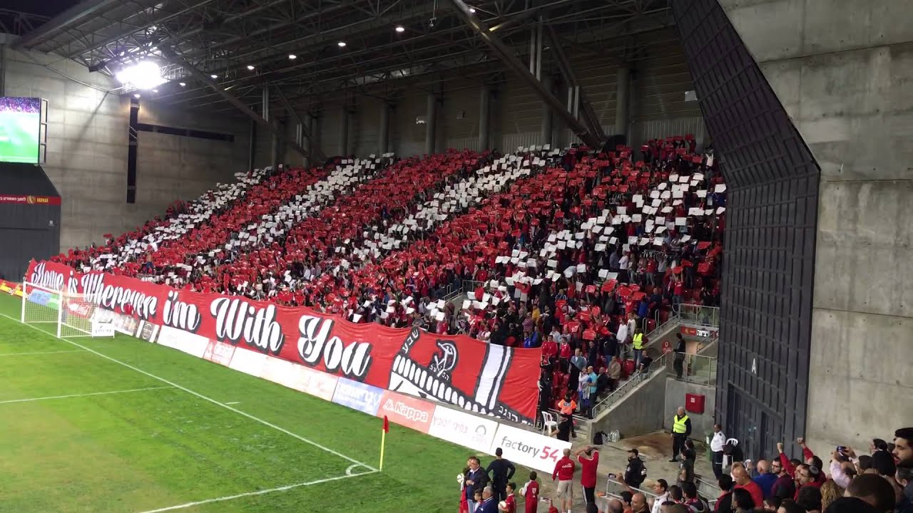

הפועל באר שבע הוא מועדון כדורגל ישראלי מהעיר באר שבע, המשחק בליגת העל הישראלית. המועדון הוקם בשנת 1949, וכיום המועדון חבר בארגון המועדונים האירופיים.
צבעי התלבושת הביתית הקבועה של המועדון הם אדום ולבן. עד שנת 1959 ערכה הקבוצה את משחקי הבית שלה באצטדיון שהיה ממוקם בעיר העתיקה בבאר שבע, לאחר מכן עברה לשחק באצטדיון "וסרמיל". החל מעונת 2015/2016 משחקת הקבוצה באצטדיון טרנר.
המועדון החל לזכות בתארים משנות ה-70. לאורך כל שנותיה זכתה הקבוצה בחמש אליפויות, שני גביעי מדינה, ארבעה גביעי טוטו, ארבעה גביעי אלוף האלופים וגביע ליליאן אחד. כמו כן, באר שבע היא הקבוצה הראשונה בתולדות
הכדורגל הישראלי ששיחקה במפעל אירופאי (גביע האינטרטוטו), במשותף עם בית"ר ירושלים. בנוסף, באר שבע היא הקבוצה הראשונה בתולדות הכדורגל הישראלי ששיחקה במוקדמות גביע אופ"א, ובמוקדמות הליגה האזורית במשותף עם מכבי תל אביב ומ.ס. אשדוד.
ארגון האוהדים אולטרה דרום נוסד בשנת 2014 לאחר איחוד שני ארגוני האוהדים "THE CAMELS 05" ביחד עם "SOUTH SIDE" ופעילותו התרכזה בשער 5 באצטדיון וסרמיל. באצטדיון טרנר הוא פועל מאחורי השער ביציע הדרומי.
הארגון מתמקד בעידוד הקבוצה ובהכנת תפאורה למשחקים. כמו כן, מסייע הארגון לארגן לאוהדי הקבוצה בדרכי הגעה למשחקי חוץ. מאז שעברה הקבוצה לאצטדיון טרנר, החל הארגון להציג תפאורות עידוד מתקדמות. בעונת 2016/2017 ארגון האוהדים החל בקמפיין גיוס כספים
וזאת על מנת לרכוש ארכובה ליציע הדרומי שתסייע בפריסת התפאורות. הסכום אליו שאפו להגיע בארגון היה מאה אלף שקלים ומועד סיום הקמפיין עמד על כחודש, אולם לאחר 24 שעות הכסף גויס במלואו. הארגון דוגל בהיבדלות פוליטית וחרט על עצמו את
המוטו "ULTRAS NO POLITICA".

תפאורת קהל הפועל באר שבע בתחילת משחק
אוהדי הפועל באר שבע מעודדים במשחק נגד אולימפיאקוס
ליגת העל
אליפויות (5) - עונות: 1974/1975, 1975/1976, 2015/2016, 2016/2017, 2017/2018.
גביע המדינה (2) - עונות: 1996/1997, 2019/2020.
גביע הטוטו (3) - עונות: 1988/1989, 1995/1996, 2016/2017.